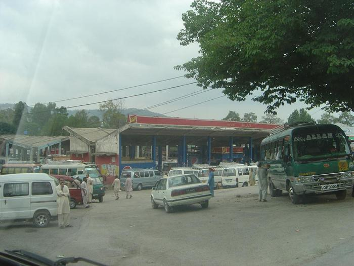

<!doctype html>
<html lang="en">
    <head>
        <meta charset="utf-8">
        <meta http-equiv="X-UA-Compatible" content="IE=edge">
        <meta name="viewport" content="initial-scale=1,user-scalable=no,maximum-scale=1,width=device-width">
        <meta name="mobile-web-app-capable" content="yes">
        <meta name="apple-mobile-web-app-capable" content="yes">
        <link rel="stylesheet" href="css/leaflet.css"><link rel="stylesheet" href="http://maxcdn.bootstrapcdn.com/font-awesome/4.6.1/css/font-awesome.min.css"><link rel="stylesheet" href="css/L.Control.Locate.min.css">
        <link rel="stylesheet" href="css/qgis2web.css">
        <link rel="stylesheet" href="css/leaflet-search.css">
        <link rel="stylesheet" href="css/Control.OSMGeocoder.css">
        <link rel="stylesheet" href="css/leaflet-measure.css">
        <link rel="stylesheet" href="css/custom.css">
        <link rel="stylesheet" href="plugins/leaflet.pm-develop/leaflet.pm.css">
        <style>
        html, body, #map {
            width: 100%;
            height: 100%;
            padding: 0;
            margin: 0;
            
        
        }
            
             @media only screen and (max-width:600px){
           
            
            #homereturn{
                position: absolute;
                margin-left: 81%;
                margin-top: 10px;
                background-color: darkgray;
                }
            }
            
            @media only screen and (min-width:600px){
           
            
            #homereturn{
                position: absolute;
                margin-left: 96%;
                margin-top: 10px;
                background-color: darkgray;
                }
            }
            
            #map{
                position: fixed;
            }
            
            
            .leaflet-top.leaflet-right{
                margin-top: 55px;
            }
            
            @media only screen and (min-width:600px){
            #mapinfo{
                
                position: absolute;
                width: 60px;
                height: 220px;
                background-color: rgba(0,0,0,.7);
                align-content: right;
                margin-left: 95%;
                margin-top: 300px;
                
            }
            
            }
            
            @media only screen and (max-width:600px){
            #mapinfo{
                
                position: absolute;
                width: 60px;
                height: 220px;
                background-color: rgba(0,0,0,.7);
                align-content: right;
                margin-left: 80%;
                margin-top: 300px;
                
            }
            
            }
            
            

            
        </style>
        <title>Offline Map</title>
    </head>
    <body>
        <div id="map">
        </div>
        <script src="js/qgis2web_expressions.js"></script>
        <script src="js/leaflet.js"></script><script src="js/L.Control.Locate.min.js"></script>
        <script src="js/multi-style-layer.js"></script>
        <script src="js/leaflet.rotatedMarker.js"></script>
        <script src="js/leaflet.pattern.js"></script>
        <script src="js/leaflet-hash.js"></script>
        <script src="js/Autolinker.min.js"></script>
        <script src="js/rbush.min.js"></script>
        <script src="js/labelgun.min.js"></script>
        <script src="js/labels.js"></script>
        <script src="js/Control.OSMGeocoder.js"></script>
        <script src="js/leaflet-measure.js"></script>
        <script src="js/leaflet-search.js"></script>
        <script src="data/Pak_adm2_pco_20110324_0.js"></script>
        <script src="data/roads_1.js"></script>
        <script src="data/points_2.js"></script>
        <script src="plugins/leaflet.pm-develop/leaflet.pm.min.js"></script>
        <script>
        var map = L.map('map', {
            zoomControl:true, maxZoom:28, minZoom:1
        }).fitBounds([[33.9008442518,72.4724698771],[34.9825434677,75.0365095114]]);
        var hash = new L.Hash(map);
        map.attributionControl.addAttribution('<a href="https://github.com/tomchadwin/qgis2web" target="_blank">qgis2web</a>');
        L.control.locate().addTo(map);
        var measureControl = new L.Control.Measure({
            primaryLengthUnit: 'meters',
            secondaryLengthUnit: 'kilometers',
            primaryAreaUnit: 'sqmeters',
            secondaryAreaUnit: 'hectares'
        });
        measureControl.addTo(map);
        var bounds_group = new L.featureGroup([]);
        var basemap0 = L.tileLayer('http://{s}.tile.openstreetmap.org/{z}/{x}/{y}.png', {
            attribution: '&copy; <a href="http://openstreetmap.org">OpenStreetMap</a> contributors,<a href="http://creativecommons.org/licenses/by-sa/2.0/">CC-BY-SA</a>',
            maxZoom: 28
        });
        basemap0.addTo(map);
        function setBounds() {
        }
        function pop_Pak_adm2_pco_20110324_0(feature, layer) {
            var popupContent = '<table>\
                    <tr>\
                        <td colspan="2">' + (feature.properties['PROVINCE'] !== null ? Autolinker.link(String(feature.properties['PROVINCE'])) : '') + '</td>\
                    </tr>\
                    <tr>\
                        <td colspan="2">' + (feature.properties['DISTRICT'] !== null ? Autolinker.link(String(feature.properties['DISTRICT'])) : '') + '</td>\
                    </tr>\
                </table>';
            layer.bindPopup(popupContent, {maxHeight: 400});
        }

        function style_Pak_adm2_pco_20110324_0_0() {
            return {
                pane: 'pane_Pak_adm2_pco_20110324_0',
                opacity: 1,
                color: 'rgba(42,53,66,0.78)',
                dashArray: '',
                lineCap: 'butt',
                lineJoin: 'miter',
                weight: 5.0, 
                fill: true,
                fillOpacity: 1,
                fillColor: 'rgba(54,167,198,0.78)',
            }
        }
        map.createPane('pane_Pak_adm2_pco_20110324_0');
        map.getPane('pane_Pak_adm2_pco_20110324_0').style.zIndex = 400;
        map.getPane('pane_Pak_adm2_pco_20110324_0').style['mix-blend-mode'] = 'normal';
        var layer_Pak_adm2_pco_20110324_0 = new L.geoJson(json_Pak_adm2_pco_20110324_0, {
            attribution: '<a href=""></a>',
            pane: 'pane_Pak_adm2_pco_20110324_0',
            onEachFeature: pop_Pak_adm2_pco_20110324_0,
            style: style_Pak_adm2_pco_20110324_0_0,
        });
        bounds_group.addLayer(layer_Pak_adm2_pco_20110324_0);
        map.addLayer(layer_Pak_adm2_pco_20110324_0);
        function pop_roads_1(feature, layer) {
            var popupContent = '<table>\
                    <tr>\
                        <td colspan="2">' + (feature.properties['name'] !== null ? Autolinker.link(String(feature.properties['name'])) : '') + '</td>\
                    </tr>\
                </table>';
            layer.bindPopup(popupContent, {maxHeight: 400});
        }

        function style_roads_1_0() {
            return {
                pane: 'pane_roads_1',
                opacity: 1,
                color: 'rgba(214,111,0,1.0)',
                dashArray: '',
                lineCap: 'round',
                lineJoin: 'round',
                weight: 3.0,
                fillOpacity: 0,
            }
        }
        function style_roads_1_1() {
            return {
                pane: 'pane_roads_1',
                opacity: 1,
                color: 'rgba(255,255,255,1.0)',
                dashArray: '1,5',
                lineCap: 'round',
                lineJoin: 'round',
                weight: 2.0,
                fillOpacity: 0,
            }
        }
        map.createPane('pane_roads_1');
        map.getPane('pane_roads_1').style.zIndex = 401;
        map.getPane('pane_roads_1').style['mix-blend-mode'] = 'normal';
        var layer_roads_1 = new L.geoJson.multiStyle(json_roads_1, {
            attribution: '<a href=""></a>',
            pane: 'pane_roads_1',
            onEachFeature: pop_roads_1,
            styles: [style_roads_1_0,style_roads_1_1,]
        });
        bounds_group.addLayer(layer_roads_1);
        map.addLayer(layer_roads_1);
        function pop_points_2(feature, layer) {
            var popupContent = '<table>\
                    <tr>\
                        <td colspan="2">' + (feature.properties['name'] !== null ? Autolinker.link(String(feature.properties['name'])) : '') + '</td>\
                    </tr>\
                </table>';
            layer.bindPopup(popupContent, {maxHeight: 400});
        }

        function style_points_2_0() {
            return {
                pane: 'pane_points_2',
        rotationAngle: 0.0,
        rotationOrigin: 'center center',
        icon: L.icon({
            iconUrl: 'markers/blue-marker.svg',
            iconSize: [22.04, 22.04]
        }),
            }
        }
        map.createPane('pane_points_2');
        map.getPane('pane_points_2').style.zIndex = 402;
        map.getPane('pane_points_2').style['mix-blend-mode'] = 'normal';
        var layer_points_2 = new L.geoJson(json_points_2, {
            attribution: '<a href=""></a>',
            pane: 'pane_points_2',
            onEachFeature: pop_points_2,
            pointToLayer: function (feature, latlng) {
                var context = {
                    feature: feature,
                    variables: {}
                };
                return L.marker(latlng, style_points_2_0(feature));
            },
        });
        bounds_group.addLayer(layer_points_2);
        map.addLayer(layer_points_2);
        var osmGeocoder = new L.Control.OSMGeocoder({
            collapsed: false,
            position: 'topright',
            text: 'Search',
        });
        osmGeocoder.addTo(map);
        var baseMaps = {};
        L.control.layers(baseMaps,{' points': layer_points_2,' roads': layer_roads_1,' Pak_adm2_pco_20110324': layer_Pak_adm2_pco_20110324_0,}).addTo(map);
        map.on("zoomend", function(){

            if (map.hasLayer(layer_roads_1)) {
                if (map.getZoom() <= 19 && map.getZoom() >= 5) {
                    layer_roads_1.eachLayer(function (layer) {
                        layer.openTooltip();
                    });
                } else {
                    layer_roads_1.eachLayer(function (layer) {
                        layer.closeTooltip();
                    });
                }
            }
        });
        setBounds();
        var i = 0;
        layer_Pak_adm2_pco_20110324_0.eachLayer(function(layer) {
            var context = {
                feature: layer.feature,
                variables: {}
            };
            layer.bindTooltip((layer.feature.properties['DISTRICT'] !== null?String('<div style="color: #000000; font-size: 10pt; background-color: #ffffff; border: 0px solid #e3dada; padding: 0px 0px; font-family: \'Nirmala UI Semilight\', sans-serif;">' + layer.feature.properties['DISTRICT']) + '</div>':''), {permanent: true, offset: [-0, -16], className: 'css_Pak_adm2_pco_20110324_0'});
            labels.push(layer);
            totalMarkers += 1;
              layer.added = true;
              addLabel(layer, i);
              i++;
        });
            if (map.hasLayer(layer_roads_1)) {
                if (map.getZoom() <= 19 && map.getZoom() >= 5) {
                    layer_roads_1.eachLayer(function (layer) {
                        layer.openTooltip();
                    });
                } else {
                    layer_roads_1.eachLayer(function (layer) {
                        layer.closeTooltip();
                    });
                }
            }
        map.addControl(new L.Control.Search({
            layer: layer_points_2,
            initial: false,
            hideMarkerOnCollapse: true,
            propertyName: 'name'}));
        resetLabels([layer_Pakadm2pco20110324_0]);
        map.on("zoomend", function(){
            resetLabels([layer_Pakadm2pco20110324_0]);
        });
        map.on("layeradd", function(){
            resetLabels([layer_Pakadm2pco20110324_0]);
        });
        map.on("layerremove", function(){
            resetLabels([layer_Pakadm2pco20110324_0]);
        });
        </script>
        
        
        
        
        <script>
        <!--custom code-->
        
        
      var circle = L.circle([34.881649, 73.695222], {
    color: 'red',
    fillColor: '#f03',
    fillOpacity: 0.4,
    radius: 9000
}).addTo(map).bindPopup('<p>Naran/jheel saiful malook area</p>');
      
      
      
      /*abbottabad area*/
      
      var circle = L.circle([34.198826, 73.236200], {
    color: 'red',
    fillColor: '#68900C',
    fillOpacity: 0.4,
    radius: 6000
}).addTo(map).bindPopup('<p>Abbottabad - City Of Schools</p>');
      
        </script>
      <script>
      
       /*abbottabad area*/
      
      var circle = L.circle([34.359988, 73.476492], {
    color: 'red',
    fillColor: '#F59800',
    fillOpacity: 0.4,
    radius: 6000
}).addTo(map).bindPopup('<p>Muzaffarabad</p>');
      
      var circle = L.circle([34.070576, 73.378050], {
    color: 'red',
    fillColor: '#26900C',
    fillOpacity: 0.4,
    radius: 6000
}).addTo(map).bindPopup('<p>Nathia gali, ayubia area</p>');
      
      
      
        </script>
        
        
        
                <script>
        
        
        <!--custom markers-->
     
         
         
        /* itp marker*/
         
    var customIconedu = L.icon({
        iconUrl: 'markers/schoolicon.svg',
        iconSize: [20, 20], // size of the icon
        });

    // create marker object, pass custom icon as option, add to map         
    var marker = L.marker([34.10126, 73.13319], {icon: customIconedu}).addTo(map).bindPopup('<h4>ITP Abbottabad</h4>');
        
         
         /*hazara university*/
var customIconedu = L.icon({
        iconUrl: 'markers/uniicon.svg',
        iconSize: [20, 20], // size of the icon
        });

    // create marker object, pass custom icon as option, add to map         
    var marker = L.marker([34.427627, 73.250976], {icon: customIconedu}).addTo(map).bindPopup('<h4>Hazara University</h4>');
        
        
        
        /*comsats university*/
var customIconedu = L.icon({
        iconUrl: 'markers/uniicon.svg',
        iconSize: [20, 20], // size of the icon
        });

    // create marker object, pass custom icon as option, add to map         
    var marker = L.marker([34.204333, 73.246892], {icon: customIconedu}).addTo(map).bindPopup('<h4>Comsats University</h4>');
        
        
        
        
        
        
        /*abbottabad university*/
var customIconedu = L.icon({
        iconUrl: 'markers/uniicon.svg',
        iconSize: [20, 20], // size of the icon
        });

    // create marker object, pass custom icon as option, add to map         
    var marker = L.marker([34.068695, 73.149522], {icon: customIconedu}).addTo(map).bindPopup('<h4>Abbottabad University</h4>');
        
         
         
         


       /* /*tourist places*/
         
         
         /*fairy medow abbottabad*/
var customIconedu = L.icon({
        iconUrl: 'markers/touristicon.svg',
        iconSize: [30, 30], // size of the icon
        });

    // create marker object, pass custom icon as option, add to map         
    var marker = L.marker([34.903858, 73.648780], {icon: customIconedu}).addTo(map).bindPopup('<p>Fairy Meadows Hotel </p>');
         
         
         /*Naran Hotel View*/
var customIconedu = L.icon({
        iconUrl: 'markers/touristicon.svg',
        iconSize: [30, 30], // size of the icon
        });

    // create marker object, pass custom icon as option, add to map         
    var marker = L.marker([34.903953, 73.648796], {icon: customIconedu}).addTo(map).bindPopup('<p>Naran Hotel View</p>');
         
    
    /*Markazi jamia masjid naran*/
var customIconedu = L.icon({
        iconUrl: 'markers/touristicon.svg',
        iconSize: [30, 30], // size of the icon
        });

    // create marker object, pass custom icon as option, add to map         
    var marker = L.marker([34.903944, 73.648392], {icon: customIconedu}).addTo(map).bindPopup('<p>Markazi jamia masjid naran </p>');
         
    
    /*Hotel Mount View*/
var customIconedu = L.icon({
        iconUrl: 'markers/touristicon.svg',
        iconSize: [30, 30], // size of the icon
        });

    // create marker object, pass custom icon as option, add to map         
    var marker = L.marker([34.903775, 73.647770], {icon: customIconedu}).addTo(map).bindPopup('<p>Hotel Mount View </p>');
         
    
    /*Islamabad Tourism Hotel*/
var customIconedu = L.icon({
        iconUrl: 'markers/touristicon.svg',
        iconSize: [30, 30], // size of the icon
        });

    // create marker object, pass custom icon as option, add to map         
    var marker = L.marker([34.904815, 73.647848], {icon: customIconedu}).addTo(map).bindPopup('<p>Islamabad Tourism Hotel </p>');
    
    
    /*Royal Dream Hotel Naran*/
var customIconedu = L.icon({
        iconUrl: 'markers/touristicon.svg',
        iconSize: [30, 30], // size of the icon
        });

    // create marker object, pass custom icon as option, add to map         
    var marker = L.marker([34.905343, 73.648356], {icon: customIconedu}).addTo(map).bindPopup('<p>Royal Dream Hotel Naran </p>');
    
    
    
      /*HOTEL deMANCHI*/
var customIconedu = L.icon({
        iconUrl: 'markers/touristicon.svg',
        iconSize: [30, 30], // size of the icon
        });

    // create marker object, pass custom icon as option, add to map         
    var marker = L.marker([34.906267, 73.650582], {icon: customIconedu}).addTo(map).bindPopup('<p>HOTEL deMANCHI </p>');
    
    
    
    
       
         
         
   /*Punjab Tikka House*/
var customIconedu = L.icon({
        iconUrl: 'markers/touristicon.svg',
        iconSize: [30, 30], // size of the icon
        });

    // create marker object, pass custom icon as option, add to map         
    var marker = L.marker([34.908207, 73.651982], {icon: customIconedu}).addTo(map).bindPopup('<p>Punjab Tikka House  Naran, Pakistan +92 343 8926122</p>');
    
    /*Millennium Inn Hotel Naran*/
var customIconedu = L.icon({
        iconUrl: 'markers/hotel.svg',
        iconSize: [30, 30], // size of the icon
        });

    // create marker object, pass custom icon as option, add to map         
    var marker = L.marker([34.908862, 73.651751], {icon: customIconedu}).addTo(map).bindPopup('<p>Millennium Inn Hotel Naran</p><P>Mansehra - Naran - Jalkhad - Chilas Rd, Near PTDC, Main Bazar، Naran, Pakistan  millenniuminn.com.pk  contact +92 343 9111804</p>');
         
         
         
     /*Saif ul Malook Lake*/
var customIconedu = L.icon({
        iconUrl: 'markers/touristicon.svg',
        iconSize: [30, 30], // size of the icon
        });

    /*create marker object, pass custom icon as option, add to map   */      
    var marker = L.marker([34.908898, 73.653022], {icon: customIconedu}).addTo(map).bindPopup('<p>Saif ul Malook Lake</p>');  
        
         
         
         /*Faran Hotel Naran*/
var customIconedu = L.icon({
        iconUrl: 'markers/touristicon.svg',
        iconSize: [30, 30], // size of the icon
        });

    // create marker object, pass custom icon as option, add to map         
    var marker = L.marker([34.908836, 73.656681], {icon: customIconedu}).addTo(map).bindPopup('<p>Faran Hotel Naran</p>');  
         
        
    
    /*Pine Park Hotel & Restaurant*/
var customIconedu = L.icon({
        iconUrl: 'markers/touristicon.svg',
        iconSize: [30, 30], // size of the icon
        });

    // create marker object, pass custom icon as option, add to map         
    var marker = L.marker([34.909126, 73.660779], {icon: customIconedu}).addTo(map).bindPopup('<p>Pine Park Hotel & Restaurant</p>');  
         
    /*Trout Lodges*/
var customIconedu = L.icon({
        iconUrl: 'markers/touristicon.svg',
        iconSize: [30, 30], // size of the icon
        });

    // create marker object, pass custom icon as option, add to map         
    var marker = L.marker([34.908695, 73.661841], {icon: customIconedu}).addTo(map).bindPopup('<p>Trout Lodges</p>');
    
    
    
    
    
    /*Grey Walls Mountain Huts & Cottages*/
var customIconedu = L.icon({
        iconUrl: 'markers/touristicon.svg',
        iconSize: [30, 30], // size of the icon
        });

    // create marker object, pass custom icon as option, add to map         
    var marker = L.marker([34.908119, 73.663290], {icon: customIconedu}).addTo(map).bindPopup('<p>Grey Walls Mountain Huts & Cottages</p>');
    
    
    
    /*Wild Oak Hotel Naran*/
var customIconedu = L.icon({
        iconUrl: 'markers/touristicon.svg',
        iconSize: [30, 30], // size of the icon
        });

    // create marker object, pass custom icon as option, add to map         
    var marker = L.marker([34.906905, 73.666391], {icon: customIconedu}).addTo(map).bindPopup('<p>Wild Oak Hotel Naran</p>');
    
    
    
    /*Fabssgo Hotel*/
var customIconedu = L.icon({
        iconUrl: 'markers/touristicon.svg',
        iconSize: [30, 30], // size of the icon
        });

    // create marker object, pass custom icon as option, add to map         
    var marker = L.marker([34.906905, 73.666992], {icon: customIconedu}).addTo(map).bindPopup('<p>Fabssgo Hotel</p>');
    
  /*  Shelton Inn Hotel*/
var customIconedu = L.icon({
        iconUrl: 'markers/touristicon.svg',
        iconSize: [30, 30], // size of the icon
        });

    // create marker object, pass custom icon as option, add to map         
    var marker = L.marker([34.906456, 73.669009], {icon: customIconedu}).addTo(map).bindPopup('<p>Shelton Inn Hotel</p>');
    
    
    
    /*Lake Saiful Malook Hotel*/
var customIconedu = L.icon({
        iconUrl: 'markers/touristicon.svg',
        iconSize: [30, 30], // size of the icon
        });

    // create marker object, pass custom icon as option, add to map         
    var marker = L.marker([34.884870, 73.694020], {icon: customIconedu}).addTo(map).bindPopup('<p>Lake Saiful Malook Hotel</p>');
    

        
      /*Bridge of Jheel Saif Ul Malook*/
var customIconedu = L.icon({
        iconUrl: 'markers/touristicon.svg',
        iconSize: [30, 30], // size of the icon
        });

    // create marker object, pass custom icon as option, add to map         
    var marker = L.marker([34.881649, 73.695222], {icon: customIconedu}).addTo(map).bindPopup('<p>Bridge of Jheel Saif Ul Malook</p>');  
        </script>
        <script src="plugins/Leaflet.Ellipse-master/l.ellipse.js"></script>
        <script src="plugins/Leaflet.Ellipse-master/l.ellipse.min.js"></script>
        <script>
        
        // define toolbar options
var options = {
  position: 'topleft', // toolbar position, options are 'topleft', 'topright', 'bottomleft', 'bottomright'
  drawMarker: true, // adds button to draw markers
  drawPolyline: true, // adds button to draw a polyline
  drawRectangle: true, // adds button to draw a rectangle
  drawPolygon: true, // adds button to draw a polygon
  drawCircle: true, // adds button to draw a cricle
  cutPolygon: true, // adds button to cut a hole in a polygon
  editMode: true, // adds button to toggle edit mode for all layers
  removalMode: true, // adds a button to remove layers
};
        
            // add leaflet.pm controls to the map
map.pm.addControls(options);
        </script>
        
        
        
        
        
        
        <div id="mapinfo">
   
        
        
            
            
            
        </div>        
        
        <div id="homereturn">
        <button><a  href="../index.html"></a></button>
        </div>
        
        
        
        
        
        
        
        
        <!--police markers-->
        
        
        
        <script>
        
                 var custompolice1 = L.icon({
        iconUrl: 'markers/policeicon.svg',
        iconSize: [30, 30], // size of the icon
        });
            
            
    var marker = L.marker([34.152443, 73.225481], {icon: custompolice1}).addTo(map).bindPopup('<p>Atd Police</p> <center><a href="../atdpolice.html" style="background-color:black; width:75px; height: 30; padding: 5px; color:white;">Details</a></center>');
            
            
            
            var custompolice2 = L.icon({
        iconUrl: 'markers/policeicon.svg',
        iconSize: [30, 30], // size of the icon
        });
            
            
    var marker = L.marker([34.166665, 73.263997], {icon: custompolice2}).addTo(map).bindPopup('<p>Nawasher Police</p> <center><a href="../cantpolice.html" style="background-color:black; width:75px; height: 30; padding: 5px; color:white;">Details</a></center>');
            
            
            
            
            
         /*restaurants*/
         
         var usmaniares = L.icon({
        iconUrl: 'markers/food.svg',
        iconSize: [30, 30], // size of the icon
        });
            
            
    var marker = L.marker([34.191595, 73.234719], {icon: usmaniares }).addTo(map).bindPopup('<p>Usmania</p> <center><a href="../usmania.html" style="background-color:black; width:75px; height: 30; padding: 5px; color:white;">Details</a></center>');
            
            
            
            
            
            
            
            
            
            

            
            
            
            var hotelone = L.icon({
        iconUrl: 'markers/food_fastfood.svg',
        iconSize: [30, 30], // size of the icon
        });
            
            
    var marker = L.marker([34.215599, 73.243033], {icon: hotelone }).addTo(map).bindPopup('<p>Hotel One </p> <center><a href="../hotelone.html" style="background-color:black; width:75px; height: 30; padding: 5px; color:white;">Details</a></center>');
            
            
               var makkh = L.icon({
        iconUrl: 'markers/food_fastfood.svg',
        iconSize: [30, 30], // size of the icon
        });
            
            
    var marker = L.marker([34.123227, 73.181522], {icon: makkh }).addTo(map).bindPopup('<p>Makkah Hotel</p> <center><a href="../makkah.html" style="background-color:black; width:75px; height: 30; padding: 5px; color:white;">Details</a></center>');
            
            
            
            
            
            
            
            
                 var atdbus = L.icon({
        iconUrl: 'markers/transport_bus_stop.svg',
        iconSize: [30, 30], // size of the icon
        });
            
            
    var marker = L.marker([34.146605, 73.214395], {icon: atdbus }).addTo(map).bindPopup('<p>ATD Bus Stand</p> <center><a href="../atdbusstand.html" style="background-color:black; width:75px; height: 30; padding: 5px; color:white;">Details</a></center>');
        
        </script>
        
        
        
        
        
        
        
        
        
        
        
        
        
        
        
    </body>
</html>
